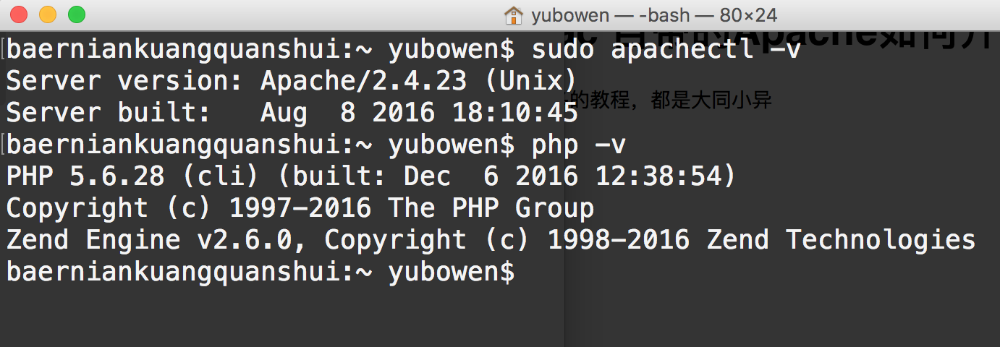
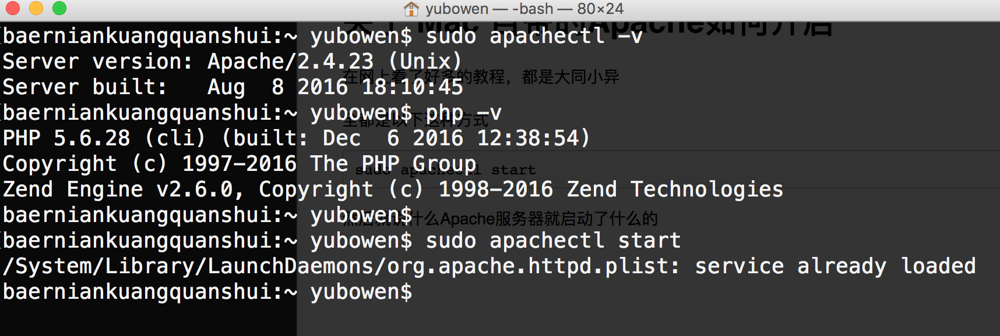
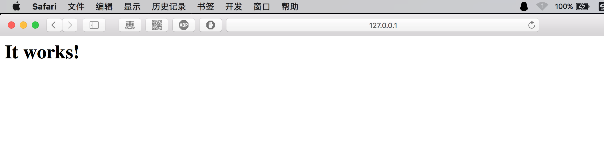
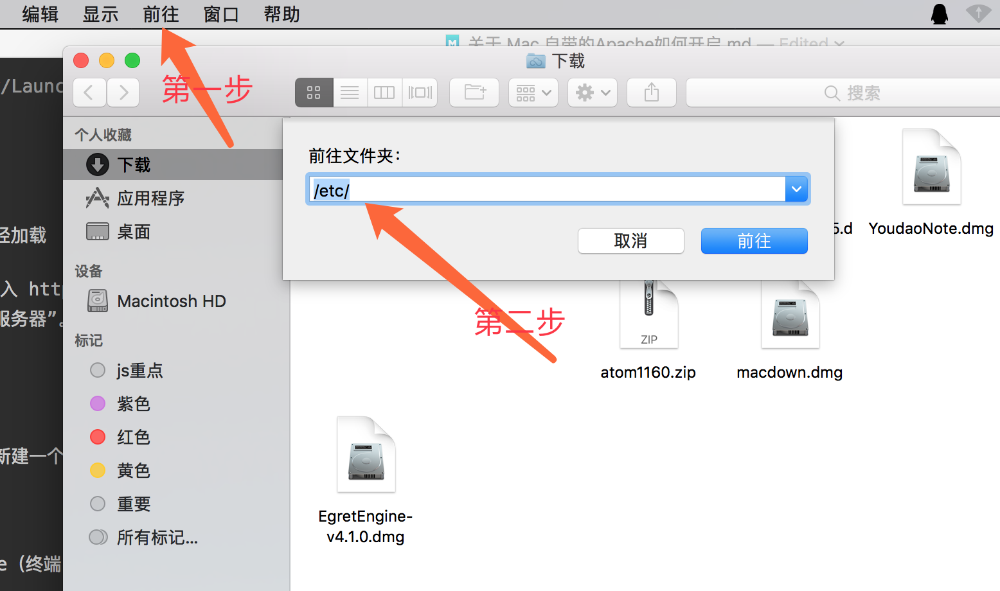
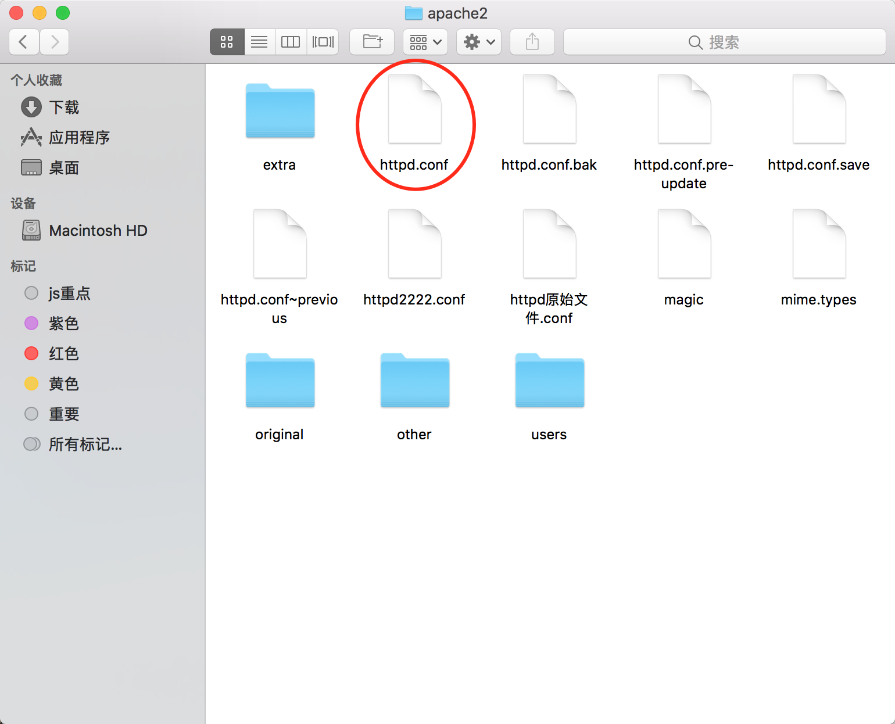
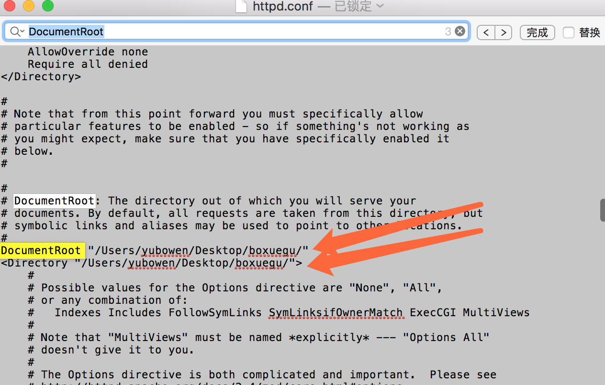

首先我要说的就是，其实 Mac自带的 Apache 是默认开启的!!
看本文您需要会基本的 shell 知识
我电脑的基本信息：
在网上看了好多的教程，都是大同小异，并没有从根本上解决我的问题
在此自己写个文档
sudo apachectl -v
php -v
全都是以下这种方式
sudo apachectl start然后就说什么Apache服务器就启动了什么的

打印这个东西
/System/Library/LaunchDaemons/org.apache.httpd.plist: service already loaded
意思就是 服务器已经加载
但是当我在浏览器输入 http://127.0.0.1 或者 http://localhost 的时候，发现总是提示“无法连接到服务器”。在网上找了很多的方法，全都不起作用，最后用此办法解决了该问题。
解决方法：
在log目录下，新建一个名为apache2的文件夹（终端：$ sudo mkdir /private/var/log/apache2）
然后重启apache（终端：$ sudo apachectl restart）

这样会自动在apache2里面重新生成apache需要的日志，便可正常访问和使用apache服务了。
默认的位置是 /Library/WebServer/Documents
比如我想将其改到桌面上


由于mac的权限问题，所以需要将这个文件拖到桌面上，打开进行编辑
将此处的路径改成自己想要的路径

然后重启服务器
sudo apachectl restart然后打开 127.0.0.1 就可以看到自己的目录里面的东西了
仍然是打开刚刚的那个文件
搜索以下代码，并去掉前面 # 号
#LoadModule php5_module libexec/apache2/libphp5.so保存并退出
重启服务器
sudo apachectl restart打开127.0.0.1就可以看到写的php文件了
其他的关于更改域名，host文件之类的，网上很多的教程，在此就不赘述了